MEXICO EN COPAS MUNDIALES
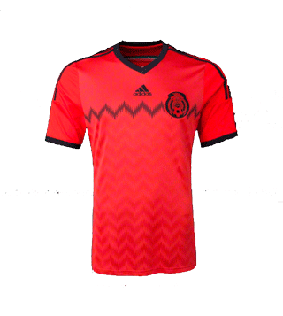
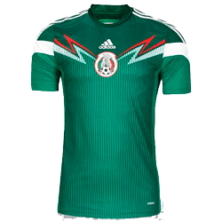
SELECCIONADOS
| Foto | Nombre | Equipo | Posicion |
|---|---|---|---|
| 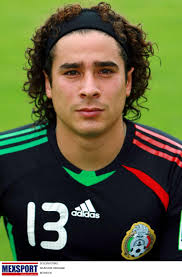 | Guillermo Ochoa | Ajaccio | Potero |
| 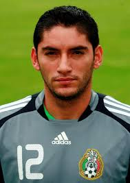 | Jesus Corona | Cruz Azul | Portero |
| Alefredo Talavera | Toluca | Portero | |
| 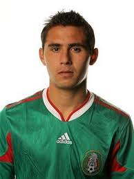 | Paul Aguilar | America | Defensa |
| Miguel Layun | America | Defensa | |
| Diego Reyes | FC Porto | Defensa | |
| 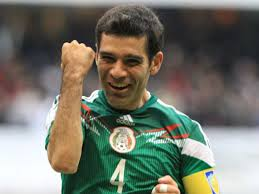 | Rafael Marquez | Leon | Defensa |
| Hugo Ayala | Tigres | DEfensa | |
| 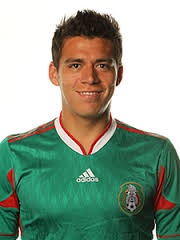 | Hector Moreno | Espanyol de Barcelona | Defensa |
| 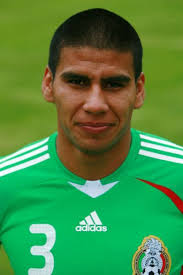 | Carlos Salcido | Tigres | Defensa |
| 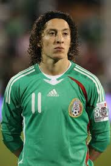 | Andres Guardado | Bayer Leverkusen | Defensa |
| Juan Carlos Medina | America | Volnate | |
| Jose Juan Vasquez | Leon | Volante | |
 |
Isaac Brizuela | Toluca | Volante |
| 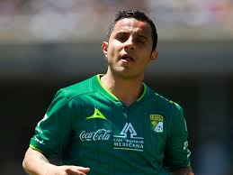 | Luis Montes | Leon | Volante |
| 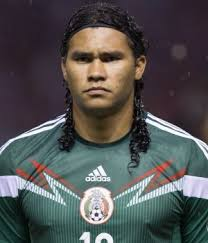 | Carlos Peña | Leon | Volante |
| 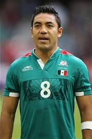 | Marco Fabian | Cruz Azul | Volante |
| 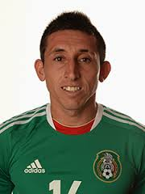 | Hector Herrera | FC Porto | Volante |
| 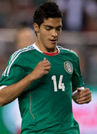 | Raul Jimenez | America | Delantero |
 |
Alan Pulido | Tigres | Delantero |
| 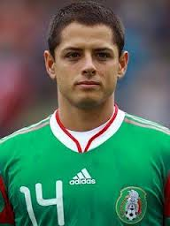 | Javier Hernandez | Manchester United | Delantero |
 |
Giovanni Dos Santos | Villareal | Delantero |
| Oribe Peralta | Santos | Delantero |
atras
 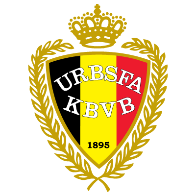
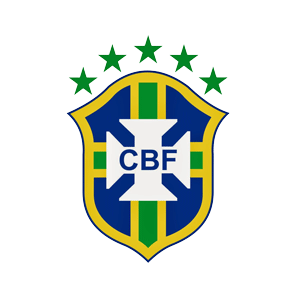
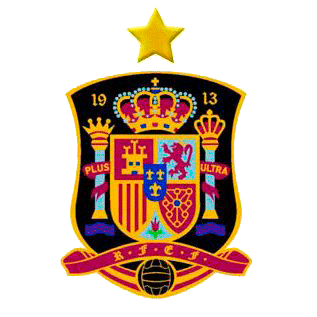
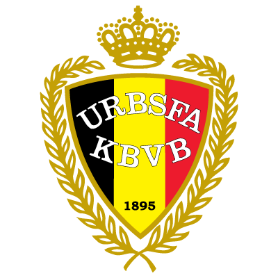
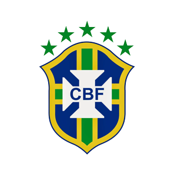
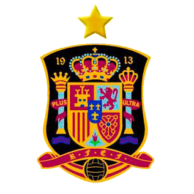
